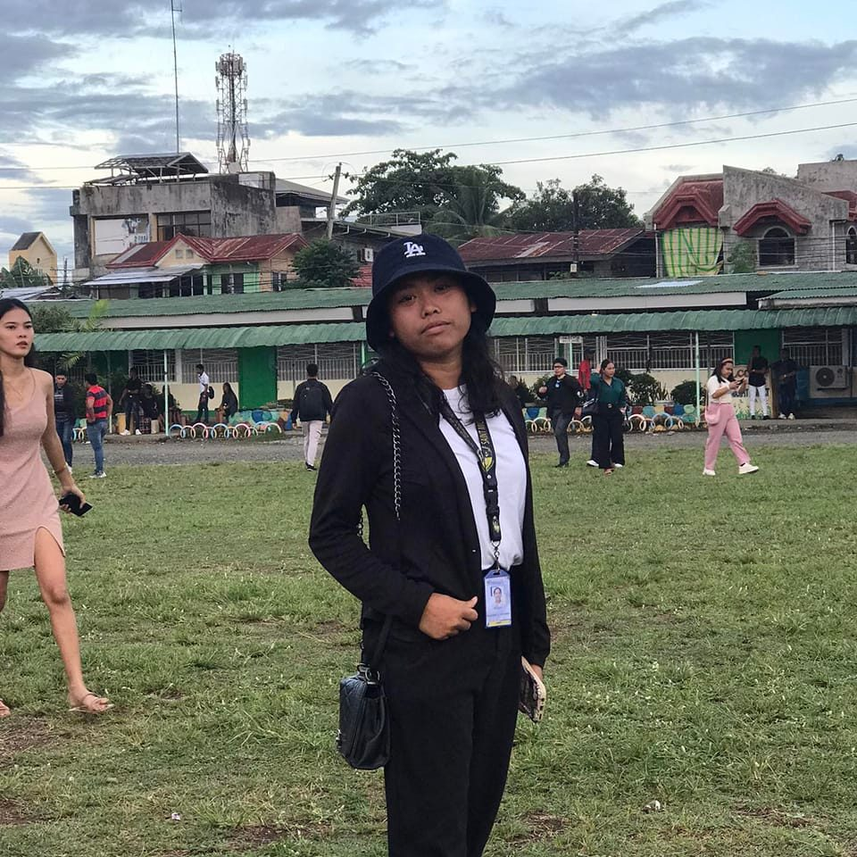
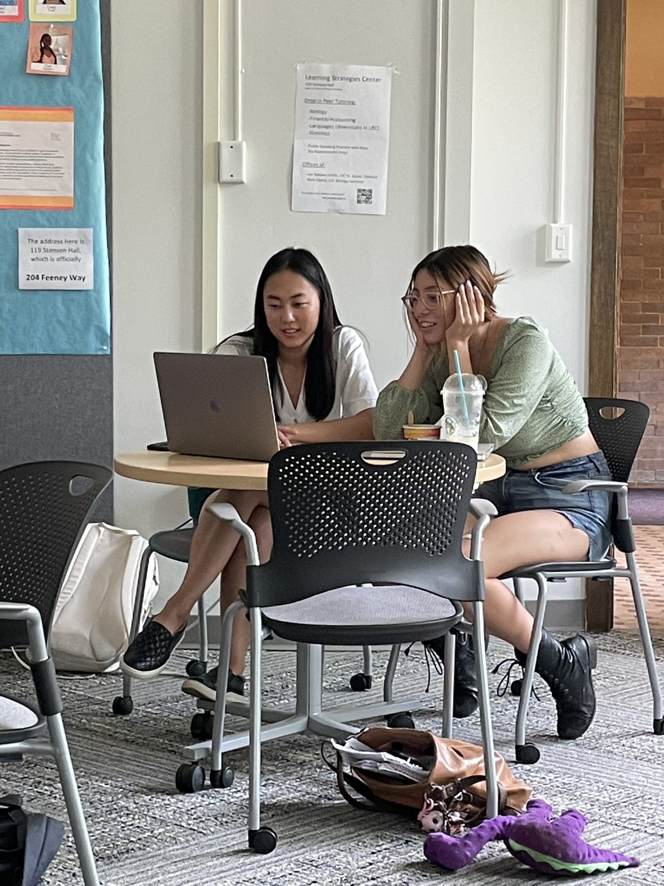
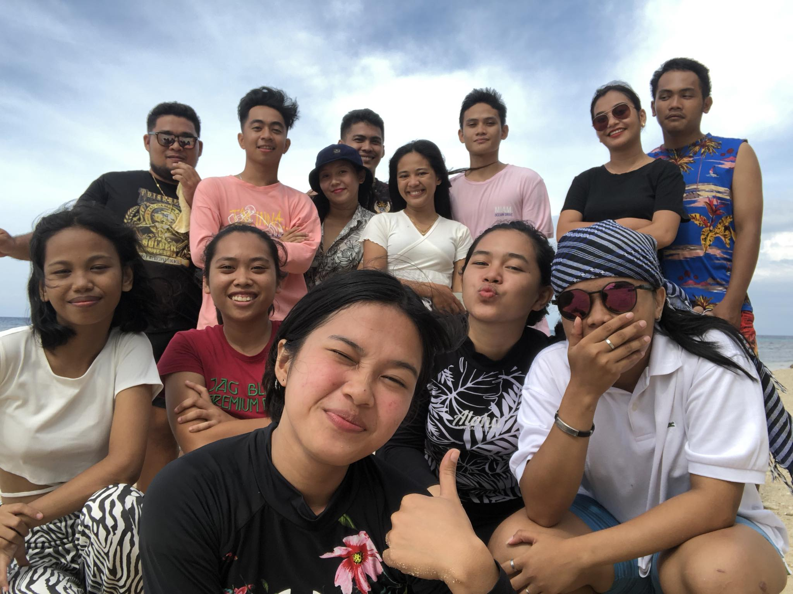
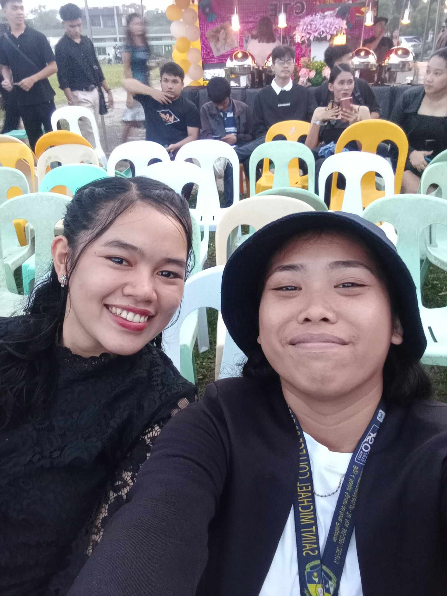

As humans, we are a complex blend of experiences, emotions, and aspirations. Each of us is a unique tapestry woven from the threads of our upbringing, culture, and personal journey. Our identities are shaped by our relationships, our passions, and the challenges we overcome. We are capable of great kindness and empathy, yet we also harbor flaws and vulnerabilities. In our pursuit of meaning and fulfillment, we seek connection with others, striving to understand and be understood. Our stories are as diverse as the stars in the sky, but beneath it all, we share a common humanity that unites us in our joys, sorrows, and the endless quest for self-discovery.

Roxanne H. Bonayog
Angel Mae M. Enobio
Our Hobbies
1. Reading
Reading is more than just deciphering words on a page; it's a gateway to infinite worlds, ideas, and perspectives. Through the act of reading, we transcend the boundaries of time and space, immersing ourselves in narratives that transport us to distant lands, ancient civilizations, and realms of imagination. Whether we lose ourselves in the pages of a gripping novel, expand our horizons with non-fiction, or find solace in poetry's lyrical embrace, reading nourishes our minds and souls. It empowers us with knowledge, empathy, and the ability to see the world through the eyes of others. In a society inundated with distractions, reading offers a sanctuary of introspection and reflection, inviting us to slow down, contemplate, and savor the beauty of language. It is a lifelong journey of exploration and enlightenment, one that enriches our lives and expands the boundaries of our understanding.
2. Adventuring
Embarking on an adventure is akin to stepping into the unknown with a heart brimming with curiosity and a spirit hungry for discovery. It's a call to break free from the confines of familiarity, to wander off the beaten path, and to embrace the thrill of uncertainty. Whether traversing rugged mountains, traversing dense forests, or navigating bustling city streets, every adventure is a story waiting to unfold. It's about testing our limits, confronting challenges, and finding hidden treasures—both within the world and within ourselves. Adventure beckons us to surrender to the whims of spontaneity, to dance with serendipity, and to embrace the unexpected twists and turns of the journey. Amidst the adrenaline-fueled moments and quiet contemplation under starlit skies, we discover the true essence of living—to embrace the present moment, to savor the beauty of the world, and to forge unforgettable memories that linger long after the journey's end.
Our Favorites
Studying

Studying is a noble pursuit that opens the doors to knowledge, enlightenment, and personal growth. It is a journey of exploration, where each book, lecture, or experiment is a stepping stone towards understanding the complexities of the world around us. Through diligent study, we unravel the mysteries of science, dissect the nuances of history, and explore the depths of human thought and creativity. It requires discipline, perseverance, and a hunger for learning that drives us to push beyond our limits. Yet, amidst the challenges and the occasional frustrations, studying offers a profound sense of fulfillment and empowerment.
Friends


Having friends is akin to having pillars of support, mirrors of our souls, and partners in the journey of life. They are the ones who celebrate our triumphs, comfort us in our sorrows, and walk alongside us through the ups and downs. Friends offer a sanctuary of understanding, acceptance, and camaraderie in a world that can often feel daunting and lonely. They provide laughter in times of joy and solace in moments of despair, reminding us that we are never truly alone. Beyond mere companionship, friends challenge us to grow, to evolve, and to become the best versions of ourselves. They offer different perspectives, broaden our horizons, and inspire us to reach for the stars. Through shared experiences and heartfelt conversations, friendships deepen bonds and create memories that last a lifetime. In essence, friends are the threads that weave the fabric of our lives, adding color, warmth, and richness to our existence.